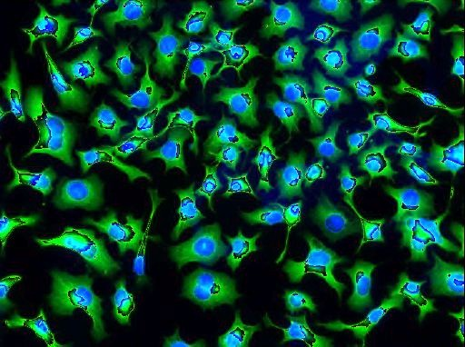
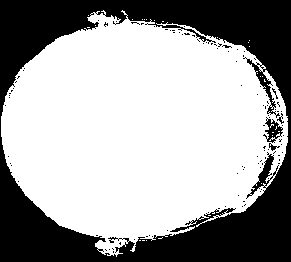
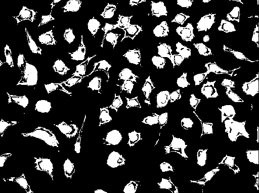

Statistical Evaluation
Lets try to evaluate the Method Otsu's with our MIP image and a picture of cultured neuroblastoma cells [1] for comparison:
 |
 |
| MIP Image of Volume1 | Picture of cells |
|---|
|  |  |
| MIP Image Segmentation with Otsu Threshold | Cell Image Segmentation with Otsu Threshold |
|---|
Explain in your report:
- What are the limitations of the Method of Otsu's?
- Use the example of the MIP Image and the Cell Image.
- Include and use both histograms in your explanation.
Root Mean Square Error
We can also try to compare different threshold with a ground truth image to find the best threshold and evaluate our results. We will implement a new method in our PostProcessing class:
public static float RootMeanSquareError(Image reference, Image result)
The Root Mean Square Error is defined as following: $RMSE(\theta)=\sqrt{E((\hat{\theta}-\theta)^2)}$.
We want to compare our segmented images. Therefore our estimated value $\theta$ can be described by our pixel values: $RMSE=\sqrt{\frac{1}{n}\sum_{i=1}^n(\hat{x}_i-x_i)^2}$, where $\hat{x_i}$ are the pixel values of our ground truth image and $x_i$ the pixel values from our segmentation.
We can now use the following Image as ground truth Image $\hat{\theta}$:
We can make use of our Signal Class in our Framework again: Create a Signal with the size of all possible thresholds in your image. Afterwards you can show a graph with the different errors in comparison to the corresponding threshold. Which threshold has the lowest RSME in comparison with our ground truth image $\hat{\theta}$?
Describe in your report:
- Why do we need statistical evaluation methods in science?
- Include a graph wich shows the relationship between threshold and RSME for all possible grey values.
- Describe the graph and compare the RSME with the according threshold
- What is the big disadvantage of the RSME in our case?
The content for this section should be about half a page long.